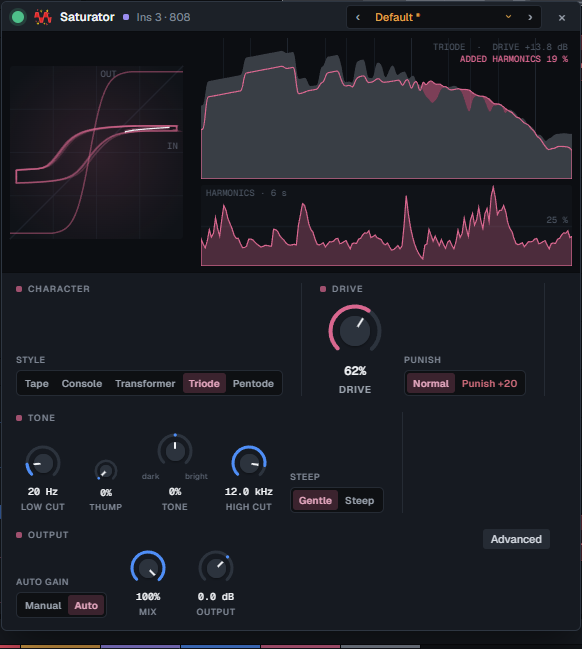
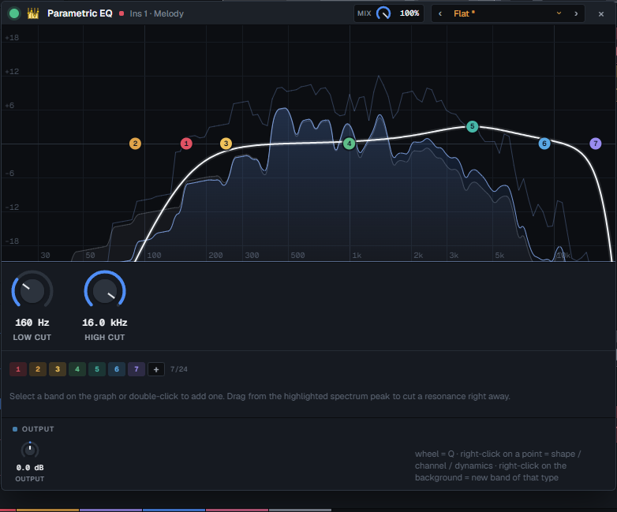
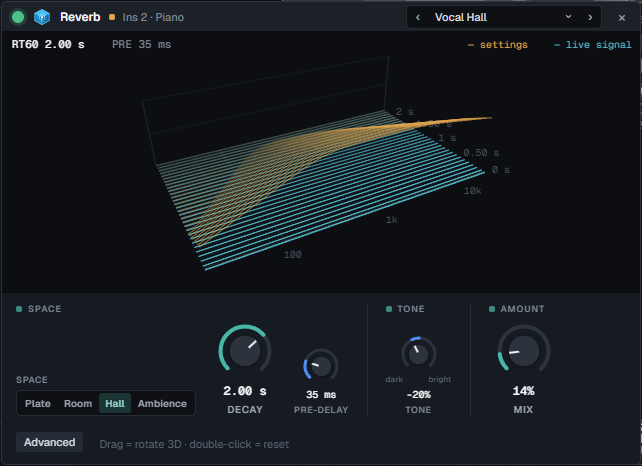

Playlist and patterns
Pattern, audio and automation clips on free lanes. Slice, fade, reverse, normalise, loop a region, and every edit is one undo step.
WAVE is a fast, FL-Studio-style DAW with a Rust audio engine: playlist, piano roll, a mixer whose effects show you what they do, a synth, a sampled grand piano, recording with comping and pitch editing. Free and open source.

Nobody touched a mouse for these. An AI agent wrote the notes, picked the sounds, set every knob and bounced the mix through the wave command line, without ever hearing the result: it mixed by measurement. They show what the engine and its instruments sound like. A person at the keyboard can take the same tools much further.
A melody loop, a distorted 808 with slides, trap drums and FX one-shots on sampler channels and audio clips, the WAVE Keys piano on top, saturators on the 808 and the kick.
Nothing but what ships with the app: the built-in synth (an 808, a reese, a hand-made "cowbell" lead), the factory drum kits, WAVE Keys and the built-in effects.
Four bars of WAVE Keys with a touch of reverb: a sampled Yamaha C5, three dynamics per note, so a harder hit changes the tone and not just the level.
These demos use a fraction of the app: no recording, no vocals, no pitch editing, no third-party plugins. See what else is in there.
Pattern, audio and automation clips on free lanes. Slice, fade, reverse, normalise, loop a region, and every edit is one undo step.
Step sequencer with swing and velocity, a piano roll for every pitched channel, and your computer keyboard or a MIDI keyboard as the instrument.
Inserts with EQ, compressor, FET compressor, saturator, delay, reverb, limiter and more. Each one draws what it is doing to the sound that is playing.
Two wavetable oscillators with unison, sub and noise, a multimode filter, two LFOs, a mod matrix and its own drive, chorus, delay and reverb. Factory presets from 808s to pads.
A sampled concert grand as a channel: 30 recorded notes at three dynamics, a clickable keyboard, and it ships inside the installer.
Record over a loop and every pass becomes a take. Pick the best parts, crossfade them, flatten when you are done. Latency is measured, not guessed.
A note-level pitch editor, Tune to Reference (pull a take onto a guide vocal), live pitch correction, a vocal rider, de-esser and denoiser, and a one-click vocal chain.
VST3 effects with their own editor windows and a crash-proof plugin scan. WASAPI and ASIO on Windows, ALSA on Linux.
Bounce the song or a loop to 32-bit float WAV or MP3, offline, while the project keeps playing.
Every built-in effect uses the same knobs, so everything can be automated and nothing has to be relearned. The picture above them is drawn from the audio that is passing through.






The wave command talks to the running app and edits the project you are looking at, with the same undo history. It is on your PATH after the first start.
--if-revision refuses to overwrite what you changed meanwhile.wave render bounces offline and prints peak, RMS and clipping, so a script or an AI agent can check its own work.wave analyze detects tempo and key; wave context returns the project as JSON.$ wave context --pretty # tracks, inserts, patterns, channels $ wave bpm 150 $ wave channels --keys # add the WAVE Keys piano $ wave pattern --id 2 --ch hat --steps "x.x. x.x. x.x5 x.x9" $ wave add-fx --insert 3 --type sat --preset 5 $ wave set-param --fx 1203 --param drive --value 72 $ wave render --out check.mp3 --from 0 --to 32 { "peakDbfs": -1.1, "rmsDbfs": -12.3, "clippedSamples": 0 } $ wave undo
The audio callback never allocates, locks or touches a file. Moving a knob never rebuilds the graph. Every moving picture in the interface is drawn on canvas from one binary telemetry frame.
The Windows installer includes ASIO support and the WAVE Keys piano. Linux packages are attached to the same release. Or build it yourself:
$ pnpm --dir ui install $ cargo install tauri-cli --version "^2" $ cd app && cargo tauri dev